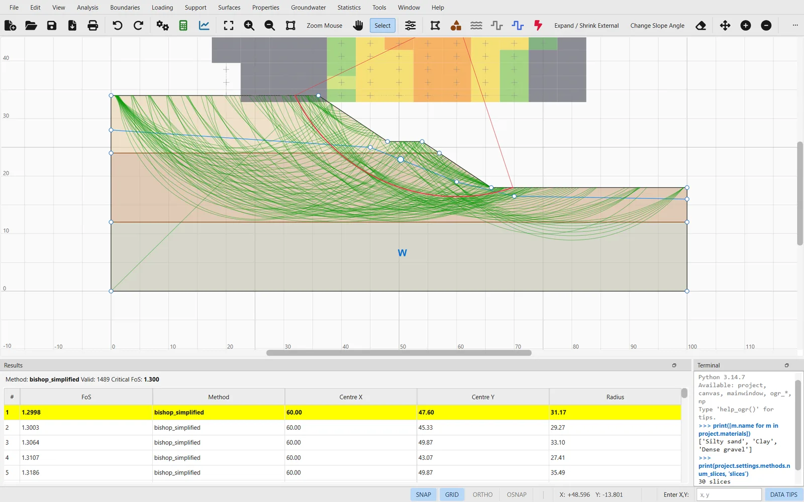
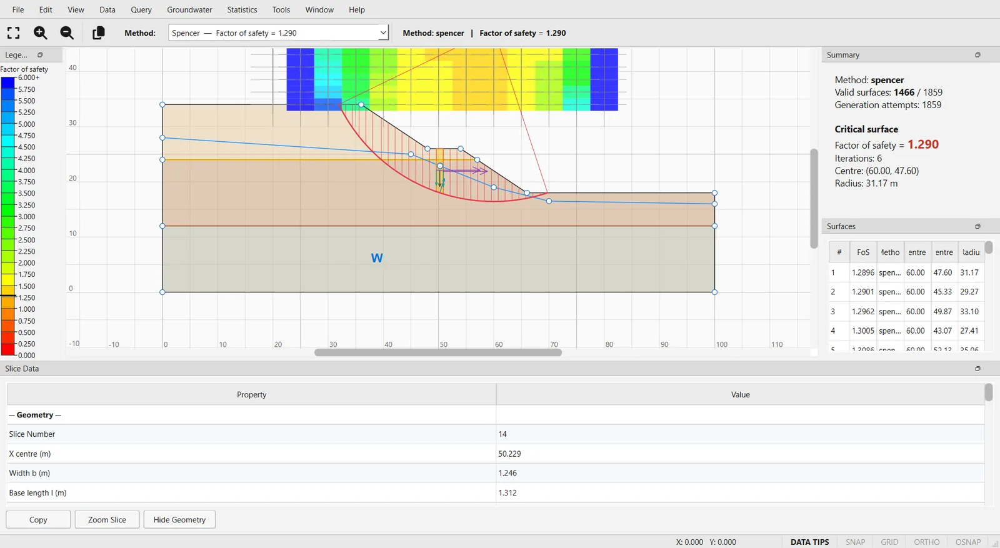
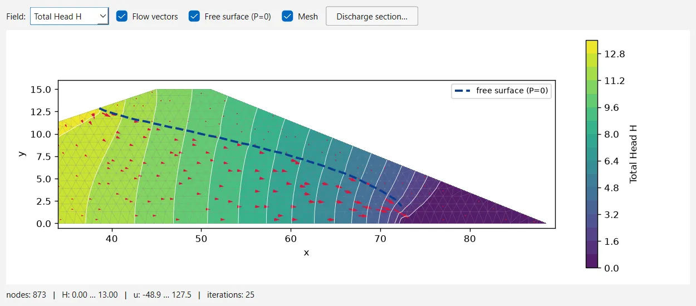
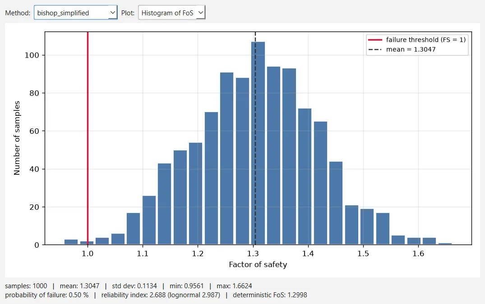

OGR Slip2D
Programa de escritorio para estabilidad de taludes en 2D por equilibrio límite, con un módulo de agua subterránea por elementos finitos, análisis probabilístico y servidor MCP oficial. El código fuente es público, así que puedes leer todas las ecuaciones que utiliza el programa.

Por qué hemos desarrollado OGR Slip2D
Casi todo el software en el que se apoya un ingeniero geotécnico es cerrado: si un factor de seguridad sale 1.32, no hay forma de ver cómo ha llegado el programa a ese valor. OGR Slip2D es una implementación nueva, en Python puro, del análisis más habitual en la práctica geotécnica. Tiene interfaz gráfica y una batería de tests que cualquiera puede revisar, y cada método, salvo el de Sarma (llegó en la versión 0.1.464), va acompañado del caso de referencia con el que se validó.
Diez métodos y siete algoritmos de búsqueda
Puedes calcular con varios métodos en un mismo análisis y comparar sus superficies críticas. El programa admite superficies circulares, no circulares y compuestas, capas débiles, límites del talud y optimización de la superficie crítica, y sus objetos de foco filtran la búsqueda antes de que se calcule ninguna superficie.
Los nueve primeros van del más sencillo al más riguroso, y cada uno se ha validado con un caso publicado o con las tablas de dovelas de un manual de referencia. El método de Sarma, que llegó en la versión 0.1.464, divide la masa en cuñas cuyas caras pueden ir inclinadas. Su factor de seguridad es el mayor F con el que la aceleración horizontal crítica de la masa (Sarma 1973) iguala al coeficiente sísmico aplicado, dividiendo por F la resistencia de las bases y la de las caras. Solo cumple el equilibrio de fuerzas, no admite soportes ni desembalse rápido y todavía no tiene un caso de validación publicado.
| Método | Equilibrio |
|---|---|
| Ordinario / Fellenius | momentos |
| Bishop simplificado | momentos |
| Janbu simplificado · corregido | fuerzas |
| Corps of Engineers #1 · #2 | fuerzas |
| Lowe-Karafiath | fuerzas |
| Spencer | fuerzas + momentos |
| GLE / Morgenstern-Price | fuerzas + momentos |
| Sarma (dovelas no verticales) | fuerzas |
Circulares: por rejilla, de talud, con refinado automático y por enjambre de partículas. No circulares: por bloques (con objetos de ventana, línea, punto y polilínea), de camino, por recocido simulado, con refinado automático y por enjambre de partículas.
Los objetos de foco (ventana, línea, punto o tangente) descartan superficies candidatas antes de calcularlas. En un caso de prueba, una tangente a una línea horizontal reduce las evaluaciones de 268 a 9. Las superficies críticas no circulares pueden optimizarse con un paseo aleatorio.
Las superficies que dibuja el usuario se calculan junto con la búsqueda: los círculos en un cálculo circular y, desde la versión 0.1.427, las polilíneas en uno no circular. Desde la versión 0.1.465, cada vértice interior de una polilínea puede llevar el ángulo de la cara que el método de Sarma pone en él, y la c y la φ de esa cara.
Cómo funciona cada búsqueda →Veintitrés modelos de resistencia, cada uno con sus parámetros en las unidades del proyecto:
Mohr-Coulomb · sin drenaje · sin drenaje variable con la profundidad, con la cota o con la distancia al talud · drenado–sin drenaje · SHANSEP · relación de tensión vertical
Hoek-Brown · Hoek-Brown generalizado con calculadora de GSI · Barton-Bandis · curva potencial · hiperbólica
Lineal anisótropo · lineal anisótropo modificado · función de resistencia anisótropa · anisótropo generalizado
Función corte–normal · función escalonada · función discreta · función c/φ · resistencia infinita · sin resistencia (agua)

Filtración calculada por elementos finitos
- Mallas de triángulos sobre las regiones de material, que comparten nodos en los contactos entre materiales.
- Flujo saturado en régimen permanente, con un tensor de conductividad anisótropo para cada material.
- Flujo no saturado con seis funciones de permeabilidad: simple, Brooks-Corey, Fredlund-Xing, Gardner, van Genuchten y definida por el usuario.
- La superficie freática y las superficies de rezume se obtienen conmutando la condición de contorno nodo a nodo.
- Análisis transitorio por etapas, con la forma mixta de la ecuación de Richards y un factor de seguridad para cada etapa. En un desembalse rápido, eso permite seguir el factor de seguridad a lo largo del tiempo.
- Cuando no hace falta calcular la filtración: niveles freáticos, líneas piezométricas, coeficiente ru, rejillas de presiones, agua embalsada y exceso de presión intersticial con B̄.


Probabilidad de rotura y análisis de sensibilidad
- Variables aleatorias para resistencias, pesos específicos, propiedades hidráulicas, soportes, cargas, coeficientes sísmicos y el nivel freático.
- Siete distribuciones con truncamiento relativo, muestreo de Monte Carlo o por hipercubo latino, y correlación entre cohesión y rozamiento.
- Análisis del mínimo global y del talud completo, probabilidad de rotura, índice de fiabilidad, gráficos de convergencia y superficie crítica probabilística.
- Barridos de sensibilidad que ordenan los datos de entrada según su influencia en el factor de seguridad.
Cargas, soportes y normas de diseño
La sección puede llevar soportes, cargas exteriores y acción sísmica, y las comprobaciones pueden seguir el Eurocódigo 7. El programa, además, lee y escribe planos en DXF, genera informes y se puede manejar con scripts.
Soportes
Anclaje de extremo, anclaje inyectado (con y sin rozamiento), bulón, pilote o micropilote, geosintético, anclaje helicoidal, muro de contención por presión de fluido equivalente y soporte definido por el usuario. Los soportes pueden ser activos o pasivos, y el retroanálisis da la fuerza necesaria para alcanzar un factor de seguridad objetivo.
Cargas y sismo
Cargas distribuidas y lineales con cinco orientaciones, coeficientes sísmicos pseudoestáticos y grietas de tracción con agua. El programa calcula también la aceleración de fluencia y, a partir de acelerogramas, el desplazamiento del bloque deslizante de Newmark.
Eurocódigo 7
Coeficientes parciales de los enfoques de proyecto DA1-C1, DA1-C2, DA2 y DA3, o los que definas tú. Se aplican sobre una copia del modelo, de modo que el cálculo no modifica tu proyecto.
Importación y exportación de DXF
Importación de DXF con detección de capas y limpieza de la geometría, y exportación a DXF del modelo y de las superficies críticas. En el área de dibujo se pueden añadir anotaciones, cotas e imágenes.
Informes
Informes del análisis en PDF, tablas de propiedades, imágenes del área de dibujo en mapa de bits o SVG, y exportación a CSV de superficies y dovelas.
Automatización
Terminal de Python integrado con acceso al modelo abierto, línea de comandos para cálculos por lotes, API de Python y el servidor MCP para agentes de IA.
Las tres fases de un análisis
Son las mismas en el programa de escritorio, desde Python o a través de un agente. El modelo se guarda en un archivo .ogr, JSON en texto plano, que pueden abrir los tres.
Dibujar o importar
Los contornos se dibujan con el ratón, se introducen por coordenadas o se importan de un DXF. Después se asignan los materiales por regiones y se añaden el agua, las cargas y los soportes.
Buscar y resolver
Cada método activado hace su búsqueda en segundo plano, en paralelo cuando es posible, con barra de progreso y botón para cancelar.
Leer el resultado
Superficies críticas y su clasificación, datos de cada dovela, diagramas de sólido libre, línea de empujes, gráficas a lo largo del talud e informes.
Ficha técnica
Datos tomados del código fuente de la versión 0.1.481. Si encuentras alguna diferencia entre esta página y el programa, vale lo que diga el programa; avísanos y corregiremos la página.
- Análisis
- Equilibrio límite 2D, deformación plana
- Métodos
- Ordinario, Bishop, Janbu simplificado y corregido, Spencer, GLE / Morgenstern-Price, Lowe-Karafiath, Corps of Engineers #1 y #2, Sarma (dovelas no verticales)
- Superficies
- Circulares, no circulares, compuestas, capas débiles
- Búsquedas
- Por rejilla, de talud, con refinado automático, por bloques, de camino, por recocido simulado, por enjambre de partículas
- Modelos de resistencia
- 23, desde Mohr-Coulomb hasta el anisótropo generalizado
- Presión intersticial
- Nivel freático, líneas piezométricas, ru, rejillas, filtración MEF, B̄, succión
- Agua subterránea (MEF)
- Flujo permanente y transitorio, saturado y no saturado, 6 funciones de permeabilidad
- Probabilístico
- Monte Carlo, hipercubo latino, 7 distribuciones, sensibilidad
- Soportes
- 9 tipos, activos o pasivos, retroanálisis
- Sísmico
- Pseudoestático, aceleración de fluencia, desplazamiento de Newmark
- Normas de diseño
- Eurocódigo 7 DA1-C1, DA1-C2, DA2, DA3 y coeficientes propios
- Archivos
- .ogr (JSON), importación y exportación de DXF, informes en PDF, CSV, resultados en HDF5
- Interfaces
- Escritorio (PySide6), terminal y API de Python, CLI, servidor MCP
- Idiomas
- Interfaz en inglés y en español
- Requisitos
- Python 3.11 o posterior
- Licencia
- AGPL-3.0-or-later · sin garantía
Una batería de 7 551 tests
Los tests comparan los resultados con casos publicados, soluciones analíticas e identidades exactas. No usamos como referencia resultados guardados del propio programa, porque conservarían cualquier error que contuvieran. En la versión 0.1.481 pasan 7 550 tests y uno se salta porque solo corre en sistemas POSIX; desde la versión 0.1.473, los tests del código que se comparte con el resto de la suite corren en OGR-Core.